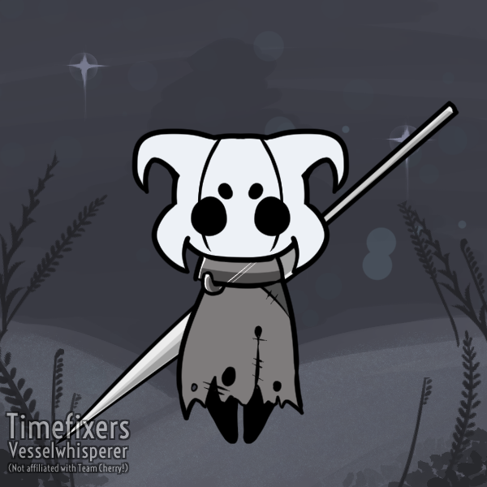

Olá, meu nome é Vinicius, e esta pagina é um portifólio mais pessoal, ao qual estou criando vários objetivos que eu tenho que descobrir a forma de concluir. É puro aprendizado de uma forma que gosto de estudar. Ideias, que as vezes não faço ideia se tem formas de executar, pois acabei ouvindo ou lendo em algum lugar que isso é possivel. Mas quero o desafio de tentar. hehehe
Aqui quero aprender como puxar informações da Steam da lista de jogos jogados recente, ver a possibilidade de puxar info de ultimos troféus adquiridos e etc.
Aqui vou puxar informações do Retroachievements pela lista de jogos jogados recente, puxar o nome do Jogo, de qual console, e as conquitas adquiridas.